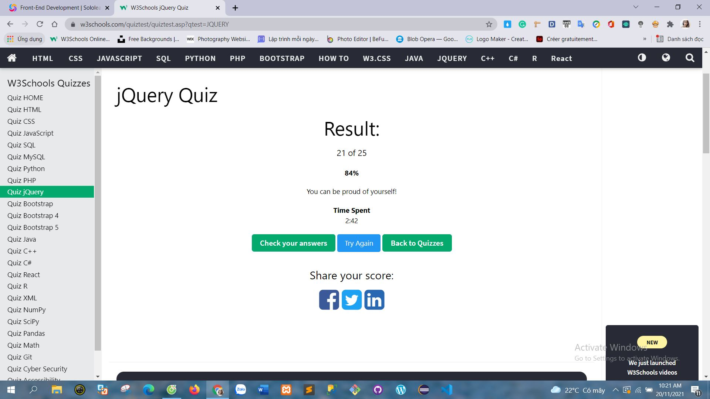

Powered by LyNH
Result jquery Quiz
| Question | Answer |
|---|---|
| jQuery là thư viện dùng ở client hay server? | jQuery là thư viện dùng ở client |
| CDN là gì? Đưa ra tên của 3 CDN phổ biến có jQuery Lợi ích của CDN là gì? |
3 CDN phổ biến :
- CDN của Google. CDN viết tắt của Content Delivery Network là mạng lưới máy chủ lưu giữ bản sao của các nội dung tĩnh bên trong website và phân phối đến nhiều máy chủ PoP. Lợi ích của CDN:- CDN nâng cao trải nghiệm người dùng, thuận lợi cho SEO: Với hình thức giao dịch dữ liệu qua hệ thống máy chủ, CDN mang đến những trải nghiệm tốt nhất cho người dùng khi truy cập website. Không chỉ giải quyết tình trạng “thắt cổ chai” giữa client và server, CDN còn tối ưu hóa băng thông, đẩy nhanh tốc độ truy cập và truyền tải dữ liệu. - Tiết kiệm: CDN giúp giảm tải băng thông và dung lượng lưu trữ cho máy chủ gốc, đồng thời, tiết kiệm chi phí so với việc mua thêm băng thông ở host. Với mạng lưới máy chủ phân tán, CDN cho phép mở rộng phạm vi tiếp cận toàn cầu và tăng độ tin cậy lẫn thời gian phản hồi của website. - Bảo mật: CDN hoàn toàn có khả năng ngăn chặn website của bạn khỏi các cuộc tấn công. Bởi vì cơ sở hạ tầng cốt lõi CDN lúc này được bảo vệ bởi Firewall. Hầu hết các CDN được xây dựng bằng kiến trúc phân tán. Do đó, nó có khả năng làm giảm thiểu mọi cuộc tấn công DDoS. Nhờ tính năng ẩn IP thật, CDN sẽ góp phần bảo mật địa chỉ IP khiến những kẻ tấn công không thể tìm được IP của bạn. |
| jQuery có thay thế cho JavaScript được không? | Sự khác biệt giữa jQuery và JavaScript là jQuery đơn giản và dễ dàng hơn nhưng JavaScript mạnh hơn JavaScript là một công cụ mạnh và sẽ không thể nắm bắt trong vài ngày hoặc thậm chí vài tuần. Ngay cả các nhà phát triển JavaScript có kinh nghiệm vẫn thường bị bối rối bởi sự hoạt động của nó. Là người mới lập trình và phát triển web sẽ không thể làm được gì nhiều với các kỹ năng JavaScript vừa mới có được trong một vài tuần. Nhưng nếu đã biết HTML và CSS thì jQuery có thể giúp bạn tạo ra các dự án ở một trình độ khác chỉ trong vài ngày. Học jQuery cũng sẽ giúp bạn hiểu được sức mạnh của JavaScript. Bạn sẽ có thể làm được nhiều việc phổ biến của một nhà phát triển JavaScript nhưng bằng cách sử dụng với jQuery bạn cũng sẽ biết được mình có thể làm được bao nhiêu với JavaScript. |
| jQuery có phải thuộc tiêu chuẩn của W3C không? |
W3C (World Wide Web Consutirum) : là tiêu chuẩn thiết kế website hay nói cách khác là một thước đo giúp đánh giá mức độ hoàn thiện của website. |
| Khác biệt giữa $(this) và (this) là gì? | (this) là đối tượng DOM, trong khi đó $(this)là trình bao bọc jQuery giống nhau. Khi sử dụng this, bạn có thể gọi các phương thức DOM trên đó, nhưng không gọi các phương thức jQuery. Khi sử dụng $(this), bạn có thể gọi các phương thức jQuery trên đó, nhưng không gọi các phương thức DOM. |
| Khác biệt giữa prop và attr |
.attr() thay đổi thuộc tính cho thẻ HTML đó. |
| Viết đoạn code thay thế $(document).ready() bằng javascript |
Code jQuery :
Thay thế bằng javascript :
|
Powered by LyNH